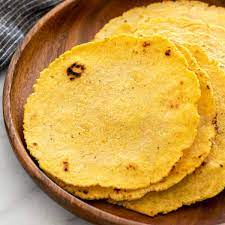

Tortillas

Description
Here is a corn tortilla recipe!
Ingredients
- 1/2 cups (231g) King Arthur Organic Masa Harina*
- (1/16 teaspoon) salt
- 2/3 cups (378g) water, warm, about 100°F
Method
- To make the dough: Weigh your masa harina; or measure it by gently spooning it into a cup, then sweeping off any excess. In a large, shallow mixing bowl, combine the masa harina and salt. Gradually add the warm water, stirring with your hands to make a cohesive dough.
- Using your hands, mix and knead the dough in the bowl for a minute or so, until it's smooth and somewhat firm; it should feel like Play-Doh. If the dough sticks to your hands and feels wet, add more masa harina a teaspoon to a tablespoon at a time. If you roll a piece into a ball and squeeze it and the edges crack, add more water a teaspoon to a tablespoon at a time.
- To shape the tortillas: Preheat a comal, a cast iron or nonstick pan, or a griddle over medium heat for 5 minutes, or until evenly hot.
- Cut two round or square pieces of food-safe plastic — from a plastic produce or zip-top bag — to a size about 1/2" larger than the diameter of your tortilla press (see “tips,” below). Set aside
- Divide the dough into 16 pieces (about 35g to 40g each) and roll each piece into a ball. Place the balls on a clean work surface and cover them with plastic or a damp kitchen towel to keep them moist.
- Working with one ball of dough at a time, sandwich it in the center of two pieces of plastic. Place the plastic-enclosed dough on the bottom plate of a tortilla press. Gently squeeze the handle of the press until the dough is about 1/16” to 1/8” thick and about 5” in diameter. To achieve a nicely round tortilla, jiggle the handle of your press just as you near the bottom. You may need to press it a couple of times to get the desired thinness.
- To cook tortillas: Peel the top piece of plastic and then the bottom piece away from the tortilla. Quickly but gently lay the tortilla on the hot pan. Don't worry if it isn't perfectly flat (you'll get better as you practice), and don't try to move it, which will cause it to tear.
- Cook the tortilla until it releases easily from the pan and its color has lightened and become opaque, 30 to 45 seconds; you don't want the tortilla to brown or become freckled at this point.
- Using a spatula or your fingers, flip the tortilla and cook it until the bottom edges start to brown and some freckles appear, 60 to 90 seconds more.
- Flip the tortilla one more time and cook until it puffs, 10 to 15 seconds. If the tortilla doesn't puff on its own, gently poke it a few times near the center. Once it puffs, let the tortilla cook for 15 to 20 seconds longer, until fully set and soft.
- Remove the tortilla from the heat and wrap it in a clean kitchen towel, or transfer it to a cloth-lined tortillero.
- Repeat the pressing and cooking process with the remaining dough.